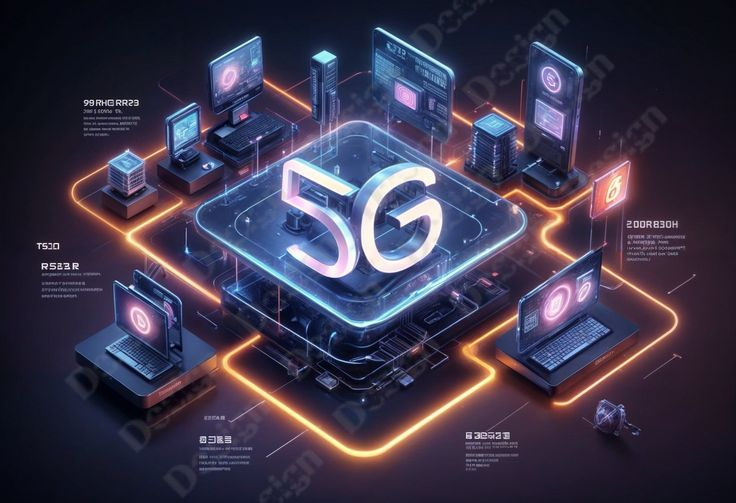

Tamil Nadu govt to establish international airport in Hosur: State CM Stalin
Speaking in the state assembly, Stalin said the airport in Hosur, Krishnagiri, will be built on 2,000 acres of land and will be capable of handling 30 million passengers every year.
The Tamil Nadu government will set up an international airport in Hosur city to cater to the increasing industrial needs in Krishnagiri and Dharmapuri districts, and ensure the overall socio-economic development of the two regions, chief minister MK Stalin announced on Thursday.
Speaking in the state assembly, Stalin said the airport in Hosur, Krishnagiri, will be built on 2,000 acres of land and will be capable of handling 30 million passengers every Year
“I am pleased to announce in this House that an international airport will be set up on 2,000 acres of land in Hosur, capable of handling 30 million passengers per annum,” the chief minister said, as he made the announcement under rule 110 in the Assembly.
Rule 110 of the Tamil Nadu Assembly Legislative Rules allows a minister to make a statement on a matter of public importance with the consent of the speaker, and does not permit a debate at the time it is made.
Stalin’s announcement was lauded by various political parties in the assembly.
Hosur is situated close to the Karnataka border, and while it is more than 300 kilometres away from Chennai, it is only around 80 kilometres away from Bengaluru’s Kempegowda International Airport.
Senior Tamil Nadu officials said the airport would propel growth in both states, and increase connectivity to business hubs and industrial clusters such as Tiruvallur, Sriperumbudur and Coimbatore, with administrators hoping that the development would also propel the city’s progress as an IT hub.
The chief minister said that after the Dravida Munnetra Kazhagam (DMK) came to power in 2021, the southern state made rapid progress in all sectors and moved up to numero uno position in India in the Export Preparedness Index for 2022.
“Tamil Nadu is India’s leading state in exports of motor vehicles, ancillaries, leather goods and electronics. From being at the bottom in 2020 in the ranking of states for industrial growth, Tamil Nadu has now become a top performing state,” he said, adding that efforts were on to transform the state into a one trillion dollar economy by 2030.
Hosur has been attracting several investments in the electronics and electric vehicle manufacturing sector since the last few years, Stalin said. The state government has been implementing various projects to improve the infrastructure and accordingly, a new master plan for Hosur is nearing completion, he added.
“Hence, the government considers it necessary to establish an airport in Hosur to help the overall socio-economic development of Krishnagiri and Dharmapuri regions,” he said.
He also announced that a modern library-cum-knowledge centre will be built in Tiruchirappalli, a city on the banks of the river Cauvery, and it will be named after late chief minister M Karunanidhi.
5G equipment market to grow by USD 146.95 Billion from 2024-2028, fueled by smart city adoption, says Technavio

The global 5G equipment market size is estimated to grow by USD 146.95 billion from 2024-2028, according to Technavio. The market is estimated to grow at a CAGR of 81.05% during the forecast period. Adoption of 5G networks for smart cities is driving market growth, with a trend towards growing r and d and deployment of 5G networks. However, energy efficiency challenges in 5g small cell networks pose a challenge. Key market players include Airspan Networks Holdings Inc., Alpha Networks Inc., Altiostar, Analog Devices Inc., Cisco Systems Inc., Comba Telecom Systems Holdings Ltd., CommScope Holding Co. Inc., Fujitsu Ltd., Huawei Technologies Co., Ltd., Infinite Electronics Inc., Laird Connectivity, Mavenir Systems Inc., NEC Corp., Nokia Corp., Qorvo Inc., Qualcomm Inc., Samsung Electronics Co. Ltd., Telefonaktiebolaget LM Ericsson, Wireless Excellence Ltd., and ZTE Corp..
Market Driver:
The global 5G equipment market is experiencing significant growth due to increased R&D investments in 5G technology by companies like Ericsson. With over USD350 million spent on 5G R&D since 2018, the focus is on creating innovative portable technologies. The shift from 4G to 5G is evident in regions such as Sub-Saharan Africa, where 48% of 2023’s 5G network launches occurred. India, too, has seen the expansion of 5G networks to over 730 districts and 100 million subscribers. These factors collectively contribute to the market’s growth during the forecast period. The 5G equipment market is experiencing significant growth with the implementation of new technologies. Networking equipment such as routers, switches, and modems are in high demand. The use of 5G technology requires advanced capabilities, leading to the need for new and upgraded equipment. Manufacturing companies are responding with innovative solutions, including customizable and efficient 5G infrastructure. The demand for 5G equipment is driven by the increasing need for faster and more reliable connectivity. The market is expected to continue growing, with Tablets, bandwidth, and cloud-based services also playing a role. Overall, the 5G equipment market is an essential component of the digital transformation trend.
Market Challenges:
The 5G equipment market faces challenges in ensuring energy efficiency, particularly with the deployment of small cells. The increase in network traffic due to higher consumer adoption of 5G and 4G will necessitate redesigning network infrastructure. Ultra-dense network (UDN) organizations will increase energy usage, primarily due to the rising number of users. Telecommunications firms must balance transmission and computational power to offer increased bandwidth while maintaining energy efficiency. Manufacturers must address this trade-off and focus on energy-saving solutions to mitigate the impact on the global 5G equipment market growth. The 5G equipment market is experiencing significant growth, with numerous companies and manufacturers investing in new technologies. However, challenges persist in the implementation and deployment of 5G infrastructure. One major challenge is the high cost of 5G equipment and components, such as antennas and base stations. Additionally, the complex nature of 5G technology requires advanced technical expertise and specialized skills. Another challenge is the need for extensive network coverage and capacity to support the increasing demand for high-speed data and connectivity. Furthermore, regulatory issues and standardization processes also pose challenges to the market’s growth. Despite these challenges, the potential benefits of 5G technology, including increased efficiency, faster data transfer, and improved network reliability, make it a worthwhile investment for businesses and consumers alike.
Research Analysis:
The 5G equipment market is experiencing significant growth due to the increasing adoption of fifth-generation technology standards worldwide. This advancement in wireless communication is revolutionizing various sectors, including data-intensive applications, smartphones, tablets, and data-driven services. The proliferation of high-definition videos, cloud-based applications, online gaming, and IoT devices is driving the demand for 5G equipment. Governments and nations are investing heavily in 5G infrastructure to support the remote work culture and edge computing capabilities. The integration of 5G with semi-autonomous vehicles, digitalization, IoT, big data, and cloud computing is transforming industries and enhancing global connectivity. The hardware and software components of 5G equipment are essential for delivering the required bandwidth and reliability for these applications.